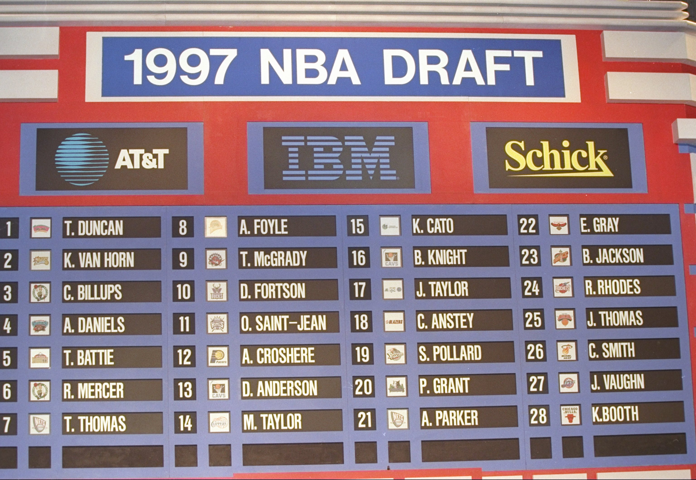
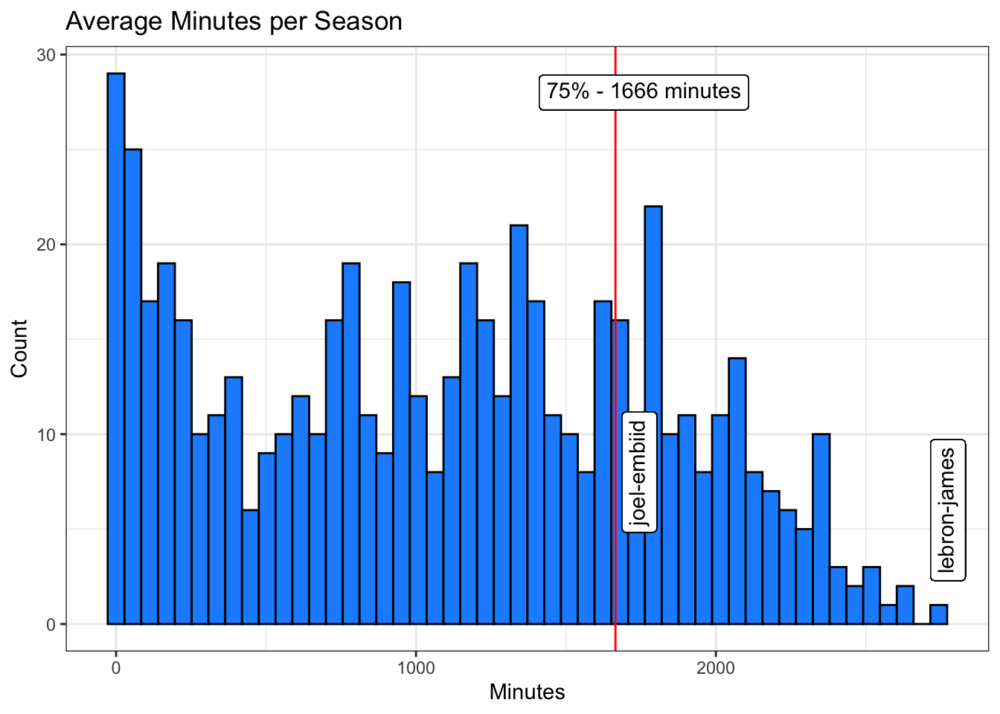

I know nothing about the NBA! Broadly speaking, I know very little about basketball.
So instead of navigating a fantasy league with my pitiful NBA knowledge, most decisions will be based on some analytical motive.
This post describes my approach towards identifying potential players to draft in the Let’s Get Tropical fantasy league.

Fantastic thoughts
The aim of fantasy is to beat an opponent by accruing a greater count of events in the majority of nine match-statistic categories across one week. All nine categories were introduced in my previous blog post.
What does a good fantasy team look like?
Put simply, it is a combination of damn good players! In reality, it is a bit more complex and requires juggling injured players, maximising game time, dropping players that under perform and picking up players that have the highest chance of performing well and are still available…woah, that’s a lot.
I know diddly-squat about basketball, so identifying good players will be my first challenge.
What do good players look like?
On face value good players are ones with the greatest count of a match statistic. From my previous blog post some of the top players are: Stephen Curry, Nikola Jokic, Trae Young.
However, simply summing the statistic events of a player is bias towards experienced players. These players have been on the court for longer periods of time, so have had more opportunity to accrue numbers. What about young up-and-coming players, and mature players who are starting to slow down? - How can these players be identified (or avoided)?
Approach
One way to do this is by looking at a players rate of statistic as oppose to their count of statistic. This is calculated by dividing the sum of a players statistic count by their total minutes on court.
However, this can have problems too. The aim of fantasy is to obtain higher counts than an opponent, the rate instead alters the scale of player performance. A player with a history of twenty seconds on court and one three pointer will have a greater three-point-rate than Stephen Curry (the best 3-pointer in the league).
So how can the scope of players analysed in this way be limited to just players that receive ample court time?
Approach Digression
One way to do this is to limit analysis to players with an average-minutes-per-season to those within the 75th quantile (75%) of the distribution. Figure 1 shows a histogram of average minutes played per season for all current players (2023 season). The red-line indicates the 75% threshold, and stands at 1,666 minutes.
Code
ggplot(df_avg_mins, aes(x = season_avg_mins)) +geom_histogram(fill ="dodgerblue", colour ="black", bins =50) +geom_vline(xintercept =quantile(df_avg_mins$season_avg_mins)["75%"], colour ="red") +theme_bw() +labs(title ="Average Minutes per Season", x ="Minutes", y ="Count") + ggtext::geom_richtext(x =1760, y =28, label ="75% - 1666 minutes") + ggtext::geom_richtext(x =2774, y =6, label ="lebron-james", angle =90) + ggtext::geom_richtext(x =1745, y =8, label ="joel-embiid", angle =90)

Figure 1: Histogram of average minutes per season
Going forward, only players above the 1666 average-minutes-per-season threshold will be considered in analysis.
Top Players by Rate
The next plots display the top fifteen players in each statistic category by position.
Players in the above figure make for a good place to start a team draft, although there are a few things to consider. It will be beneficial to select players who appear in two or more categories, essentially, the more categories a player appears in the better. This maximises your chance to accrue counts across a wider range of categories. Additionally, players capable of playing in more than one position will also make for a flexible roster.
Meaning, the ideal player is one who:
Has a high rate of statistic across multiple categories
Can play in multiple positions
Receives ample time on court
Players Who Appear in Multiple Categories
Figure 2 displays players who appear in the Top 15 of at least five or more statistic categories.
Code
intersect_plt
Figure 2: Players appearing in five or more stat categories
Final List
So, basing selection on Figure 2, my desired draft of players is as follows:
karl-anthony-towns
john-collins
joel-embiid
nikola-jokic
kristaps-porzingis
domantas-sabonis
anthony-davis
nikola-vucevic
myles-turner
lamelo-ball
deandre-ayton
al-horford
tyrese-haliburton
lauri-markkanen
julius-randle
jarrett-allen
james-harden
evan-mobley
dario-saric
ben-simmons
bam-adebayo
anthony-edwards
Limitations
Of course, there are limitations to this approach!
Firstly, position data only includes: [Centre, Forward, Guard]. This should be more granular and display the positions: [F, G, C, PF, SF, SG, PG], however, this will require additional data acquisition which I cannot be bothered doing…
Secondly, I haven’t evenly distributed my selection of players to draft across different positions. This is a requirement in the league, as the layout of players in a fantasy team reflects the layout of a basketball team in real life.
I was hoping the distribution of player performance would naturally be evenly distributed across positions, however from Figure 2 it appears most top performing players are either: [Centre, Forward]
Lastly, it is clear my method is not identifying NBA superstars, such as: LeBron James, Stephen Curry, Chris Paul, Trae Young.
My methodology was implemented as a way to any remove any bias total-minutes-played has on statistic count. However, it is odd that big NBA superstars aren’t appearing. Surely big name players would display impressive statistics even when total minutes played is controlled for in analysis? Perhaps my methodology has become the absolute anterior to the very bias it attempted to control? - Thereby, being bias in of itself…
To conclude, in order to achieve a more sensible/representative list of players to draft, slightly tweaking this approach to relax the level of bias control could be attempted. Although, I’m happy to progress with the current list and leave the rest up to chance. Anything can happen in sports, which is why it is enjoyable to watch :)